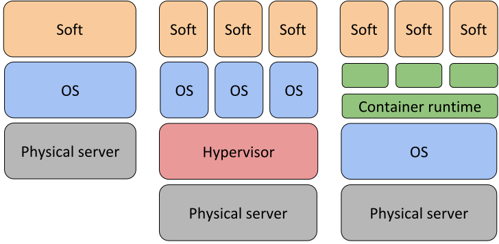

class: center, middle, main-title # Software Deployment CI/CD pipelines --- ## Today - Course organization - Project template updated for 3rd assignment - Deadline is 4th/6th of December - Content - How do we go from source code to working software? - Continuous Integration - Continuous Deployment - Questions, ideas, comments - [Sli.do #VUSE1910](https://app.sli.do/event/vpgfoqwj) --- ## Basic problem <br> .center[**Source code**] .center[|] .center[*????*] .center[↓] .center[**Software available to end-user**] -- <br> <br> .center[Ideally, instantly and automatically] --- ## Two main steps .center[**Source code**] .center[|] .center[*build and package*] .center[↓] .center[**Some binary artifact**] .center[|] .center[*deploy*] .center[↓] .center[**Software available to end-user**] --- class: center, middle # Build and package --- ## Version control system - Discussed in passing earlier -- - Also known as *VCS*, *source control*, or by product name - **Git**, SVN, CVS, Mercurial, Jazz, etc. -- - Idea - Single source of truth for versioned files - Make it easier for developers to work in parallel -- - Should contain everything needed to build the system -- - Everyone should commit to the baseline often (e.g. every day) ??? Librarian and locks --- ## From source to binary package ---- <img src="../../assets/10-build.svg"> --- ## Build automation tools - **Main goal**: save time and reduce errors -- - Secondary goals - Dependency management - Enforcing process - Repeatable builds -- - Some configuration required - Which compiler version to use? - Where are the sources? - What dependencies are required? - ... -- - Configuration can be *imperative* (steps) or *declarative* (goals) --- ## Dependencies example <img src="../../assets/10-dependencies.png"> --- ## Build config example ```groovy apply plugin: 'java' sourceCompatibility = JavaVersion.VERSION_11 repositories { mavenLocal() } dependencies { implementation 'org.springframework.boot:spring-boot-starter-web' implementation 'com.github.java-json-tools:json-schema-validator' testImplementation 'org.junit.jupiter:junit-jupiter' testRuntime 'com.tngtech.archunit:archunit-junit5-engine:0.11.0' } test { useJUnitPlatform() exclude '**/*IntegrationTest*' } ``` --- ## Continuous integration (CI) An almost universally used practice. -- - Maintain a code repository -- - Commit to baseline often -- - Build every commit to baseline automatically -- - The build should be fast and self-testing -- - Make everyone aware of the results of the latest build -- - Make the artifacts produced accessible for use, testing and deployment --- ## Build/CI server example --- class: center, middle # Deploy software build to users --- ## Deployment environment - An environment where (into which) a software package is deployed - This can include - Hardware - OS - Any required software - Any required configuration --- ## Typical environments used <img src="../../assets/10-envs.svg" style="margin: -40pt 0 -40pt 0"> -- - Local/Development - Developer's own environment -- - Integration/Test - Latest baseline build deployed automatically -- - Staging/Acceptance/Pre-production - Production replica for release candidate testing or production troubleshooting -- - Production/Live - Main environment with real users --- ## Trend 1: Machines  --- ## Trend 2: Infrastructure as code - Trend - From one-off servers -- - Towards standard machines using commodity hardware -- - Towards managing and provisioning servers through config files - Rather than physically configuring machines using interactive tools -- - Notice the same goal: save time and reduce errors -- - Enabler: apply development practices to config files - Files can be versioned, branched, reviewed, released, etc. -- - Example ([Terraform](https://github.com/terraform-providers/terraform-provider-aws/blob/master/examples/two-tier/main.tf)) --- ## Deployment today - Containers are the primary vehicle of deployment - *Docker* being the primary runtime -- - Container benefits - Less overhead - Increased portability - Developer productivity -- - Deployed either on container services - AWS Elastic Container Service -- - ... or on own infrastructure, defined as code --- ## Continuous delivery/deployment - Expand on ideas of CI -- - Both referred to as CD -- - Continuous delivery - Every working version **can be** depoyed -- - Continuous deployment - Every working version **is** deployed --- ## Benefits of CD - Faster time to market - Low risk releases - Higher degree of automation - Happier teams --- ## UML deployment diagram - Is a structure diagram -- - Models physical nodes and what artifacts are deployed on them -- - [Example](https://www.uml-diagrams.org/web-application-clusters-uml-deployment-diagram-example.html?context=depl-examples) --- ## Key takeaways - Two main phases: building some artifact and then deploying it -- - Main goal behind automation: save time and reduce errors -- - Declarative configuration is both attractive and popular -- - Learn *git*, version control everything, integrate often -- - Have multiple environments and a CI/CD pipeline -- - Use UML deployment diagram to describe how artifacts map to nodes --- ## Reading assignment Mandatory: - 17 min talk: [Continuous Delivery by Martin Fowler](https://www.youtube.com/watch?v=aoMfbgF2D_4) - Tutorial: [Gitflow branching strategy](https://www.atlassian.com/git/tutorials/comparing-workflows/gitflow-workflow) - Wiki-like entry: [Continuous Integration by Martin Fowler](https://www.martinfowler.com/articles/continuousIntegration.html) Recommended: - Wiki-like entry: [Infrastructure as Code by Martin Fowler](https://www.martinfowler.com/bliki/InfrastructureAsCode.html) - Book: [Continuous Inegration](https://www.goodreads.com/book/show/1311542.Continuous_Integration) - Book: [Continuous Delivery](https://www.goodreads.com/book/show/8686650-continuous-delivery) --- class: middle, center # Questions? --- ## Next time - Software configuration management and operations